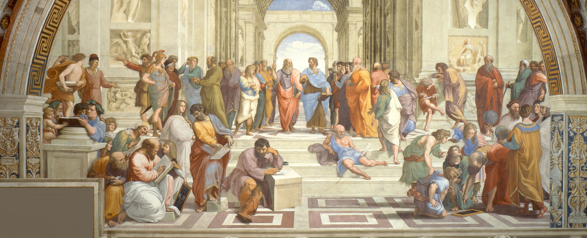

GOV261 - Ancient & Medieval Political Theory
Professor: Patrick Coby
Spring 2018
Smith College
Course Layout
The course begins with a study of Socrates and with his portrayal by the comic poet Aristophanes, who sees Socrates as an intellectually immoderate sophist. The course begins then with an accusation. Plato’s defense of Socrates follows. Amid the back and forth, students will conduct their own prosecution of Socrates, whom the Athenians tried, convicted, and executed. Aristotle and Cicero are read next to explicate the Greek and Roman views of human virtue and forms of government. One common theme connecting back to Plato is the relative worth of private life and public life, or philosophy and politics; a new theme is nature, natural law, and natural right as foundations of political order. The course finishes with an examination of the ways in which Classical thought was transmitted into the Christian West; here works by Augustine, Aquinas, and Marsilius are read, with Marsilius serving as a bridge to modern thought.


")
Syllabus
Short Papers: 2 papers, 3-5 pages in length (40% of grade)
Mid-Term Exam: in-class essay exam (20%)
Final Exam: self-scheduled essay exam (30%)
Class Participation: formal and informal participation (10%)
Attendance is required. Excessive absences (over three) will affect the semester grade by as much as a whole letter. Late papers will be penalized a grade-step for each day late, e.g., from A to A- to B+. Papers not submitted at all will incur additional penalties. Laptops are allowed for note-taking only; use of electronic devices for other purposes may affect the semester grade as well.
Texts
Plato, Aristophanes, Four Texts on Socrates (Cornell)
Plato, Protagoras and Meno (Cornell)
Aristotle, Nicomachean Ethics (Chicago)
Aristotle, The Politics (Chicago)
Cicero, The Republic and The Laws (Oxford)
Cicero, On Duties (Cambridge)
Augustine, Political Writings (Hackett)
Aquinas, St. Thomas Aquinas on Politics and Ethics (Norton)
Marsilius of Padua, Defensor Pacis (Toronto)


Contact
Office Hour: Monday 2:00pm
Seelye Hall
or by appointment
professor@smith.edu
413-xxx-xxxx